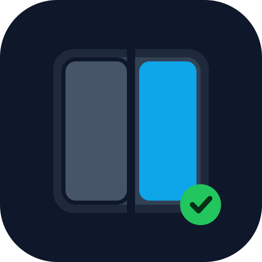

All brand files below are preserved, unmodified SVGs extracted from the source project and served from assets/. The mark is the Hinge Check: a folded device, one terracotta-to-blue screen, a green check that means ready.

The wordmark is Space Grotesk 700, -0.02em, always lowercase. The mark always ships on its ink tile. Never recolor the green check, never strip the tile.
At any size, on any surface: the check stays Ready Green #22C55E, the tile stays Ink #0F172A, and the checkmark stroke stays Check Ink #052E16. The green check is the only filled mark in the system; it means exactly one thing: ready.
Stroke-based, 1.5-2px stroke, rounded caps. The only filled mark in the system is the green check.